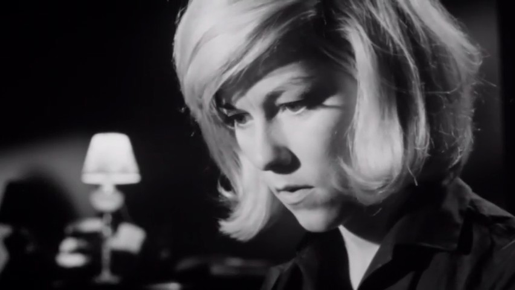

Dementia 13, frame at 6:02
Francis Ford Coppola · 1963 · Film, black and white (frame)
Free to use
Shooting began on 10 September 1962 at Ardmore Studios in Bray, Ireland, with Howth Castle standing in for Castle Haloran. Most of the American actors were Coppola's friends from UCLA, and many paid their own way to Ireland; cast and crew lived together in a farmhouse outside Dublin. Luana Anders, who plays the scheming wife, was borrowed from The Young Racers. Corman disliked the finished film and had more scenes shot by Jack Hill and Monte Hellman.